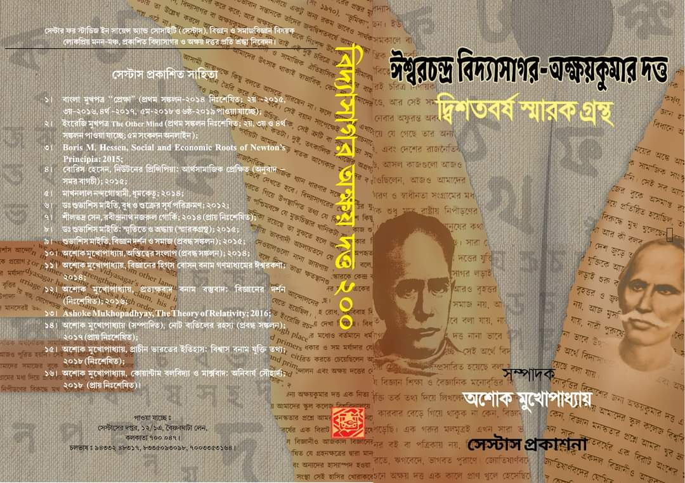
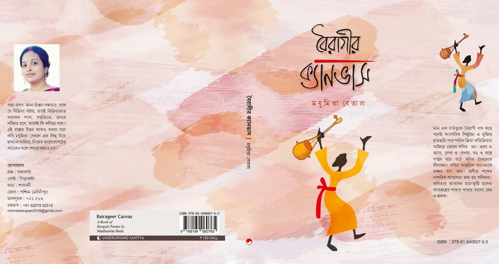

বিদ্যাসাগর ও অক্ষয়কুমার দত্তের জন্মের দ্বিশতবর্ষ উপলক্ষে কলকাতার ‘সেস্টাস’ ( সেন্টার ফর স্টাডিস ইন সায়েন্স ইন
সোসাইটি) র পক্ষ থেকে “ঈশ্বরচন্দ্র বিদ্যাসাগর-অক্ষয়কুমার দত্ত দ্বিশতবর্ষ স্মারক গ্রন্থ” এই শিরোনামে একটি স্বারক
গ্রন্থ প্রকাশ করা হয় সেস্টাসের সম্পাদক অশোক মুখোপাধ্যায় এর সম্পাদনায়।

বাংলার এই দুই মহান মনিষীর জীবনের বিভিন্ন দিক সম্পর্কে অনেকটা গবেষনা মূলক লেখা এখানে প্রকাশ করা হয়েছে। সম্পাদকের
তরফে লেখা দিয়ে শুরু হলেও এই বইটিকে মোট তিনটি ভাগে ভাগ করা হয়েছে। প্রথমভাগে বিভাগ – কঃ সমকাল- এখানে মোট ২২ জনের
লেখা ছাপানো হয়েছে। তাঁদের মধ্যে কমলেশ ভৌমিক, আশিষ লাহিড়ী, মীরাতুন নাহারে, অশোক মুখোপাধ্যায়, শুভাশিষ মুখোপাধ্যায়,
বিকাশ রঞ্জন দেবের মোত গুরুত্বপূর্ণ ব্যক্তিরাও আছেন। বিভাগ- খঃ গত-কাল। এখানে অতীতের অর্থাৎ
বিদ্যাসাগর-অক্ষয়কুমারের সমসাময়ীক ও তাদের নিজেদের এবং পরবর্তীকালের কিছু লেখকের লেখা স্থান পেয়েছে। এখানে
বাংলাদেশের তিনজন লেখক গোলাম মুরশিদ, আহমদ শরীফ ও আবুহেনা মুস্থাফা কামাল সহ রবীন্দ্রনাথ ঠাকুর, রামেন্দ্রসুন্দর
ত্রিবেদী ও সত্যেন্দ্রনাথ দত্তের লেখা এই বিভাগের গুরুতকে অনেকটাই বাড়িয়ে দিয়েছে।। বিভাগ- গঃ অনুষঙ্গ তে বিদ্যাসাগর
ও অক্ষয়কুমার দত্ত্বের জীবনের ঘটনাপঞ্জি ও রচনাবলির তালিকা ও লেখক পরিচিতি আছে এই ভাবে সমগ্র বই টির কলেবর গিয়ে
দাঁড়িয়েছে ৪৯৬ পৃষ্ঠা। এখন আমরা দেখে নেব শুধুমাত্র পৃষ্ঠা দিয়ে নয় লেখার মান ও অতি গুরুত্বপূর্ণ তথ্যের দিক দিয়ে
লেখকরা এর গুরুত্ব কে অনেক খানি বাড়িয়ে দিয়েছেন। এখন আমি সেই প্রসঙ্গে কিছু আলোচনা করে দেখাবো।
বই এর শুরুতে মাননীয় সম্পাদক অশোক মুখোপাধ্যায় ‘সম্পাদকের তরফে’ যে লেখাটি লিখেছেন সেখানে তিনি বর্তমান পরিস্থিতিতে
নানা প্রতিকুলতার মাঝে কেন এই দুই মানুষের চর্চা এগিয়ে নিয়ে যাওয়া খুব গুরুত্ব পূর্ণ তা দেখিয়েছেন, এর পর দেশের শাষক
শ্রেণী কেন এই মানুষদের চর্চা থেকে কেবলমাত্র মুখ ফিরেয়ে নিয়েছে তা নয় বিদ্যাসাগরের মূর্তিকেও তারা কিরকম ভয় পায় তা
উধারন হিসাবে গত ১৯ শে মে ২০১৯ সালে লোকসভা নির্বাচনের সময় দুই শাষক দলের সংঘর্ষে কেন বিদ্যাসাগরের মুর্তি
হাতুড়িদিয়ে ভেঙে গুঁরিয়ে দেওয়া হয় তার কারন ব্যখ্যা করেছেন। তাই আগামীদিনে সমাজে মানুষের মনুষত্ত্ব, মানবিকতা ও
নৈতিকতা ও মুক্ত বুদ্ধির চর্চার ক্ষেত্রে কেন এই মনিষীদের চর্চা খুব জরুরী তা উল্লেখ করে সেস্টাস সেই চর্চার কাজ
কতটা গুরুত্ব দিয়ে করছে তা তিনি ব্যক্ত করেছেন। মূলত সেই ভাবনা থেকেই এই রকম এক স্মরণিকার প্রকাশ তাঁরা করেছেন।
‘সমকাল’ বিভাগে মোট যে ২২ জনের লেখকের লেখা ছাপা হয়েছে বিদ্যাসাগর ও অক্ষয়কুমার উভয়ের ই সম্পর্কে সেখানে প্রতিটা
লেখা পড়ে আমি দেখেছি প্রত্যেকটা লেখার মধ্যে অনেক নতুন নতুন তথ্য আছে এবং লিখা গুলো বেশ অনেকটা গবেষনা মূলক। কিন্তু
তার মধ্যে যে কয়টি লেখা আমি এখানে আলোচনা করবো তার মধ্যে প্রথমেই শ্যামাপ্রসাদ ঘোষের ‘ বিদ্যাসাগরের বর্ণপরিচয় ও
শিশু সাহিত্যিক’ এই শিরোনামে লেখাটাতে লেখক এত সুন্দর ভাবে বিদ্যাসাগর শিশুদের পাঠ্যের উপযোগী হিসাবে বিভিন্ন বই
লেখেন ও বিভিন্ন বইএর অনুবাদ করেন তার বর্ণনা দেন, সেই সময় শিশুদের পাঠ্য হিসাবে অনেক বই প্রচলিত থাকলেও সে গুলো
কতটা দুর্বোধ্য ছিল তা দেখানোর পাশা পাশি বিদ্যাসাগরের এই শিশুপাঠ্য বইগুলোর গুরুত্ব ব্যখ্যা করেছেন, সেই সময় এই বই
গুলো ছাত্র-ছাত্রী ও বাঙালী সমাজের মধ্যে শিক্ষার প্রসারে তার কি প্রভাব ফেলেছিল তা উল্লেখ করেন। এবং বাংলার বর্ণ
মালার সংযোজন ও বিয়োজনের ব্যাপারে বিদ্যাসাগরের পান্ডিত্যের গুরত্ব ব্যখ্যা করেন, সেই সময় তা লেখা হলেও শিশু পাঠ্য
হিসাবে সেই সমস্থ বইএর বর্তমান সময়েও কত গুরুত্ব পূর্ণ লেখক তা উল্লেখ করেছেন।
এর পর অধ্যাপক কমলেশ ভৌমিকের ‘বিদ্যাসাগরের বিজ্ঞান চেতনা’ শিরোনামে লেখাতে বিদ্যাসাগর নিজে সংস্কৃত সাহিত্যের বিরাট
পন্ডিত হলেও ব্যক্তিগত জীবনে তিনি কতটা বিজ্ঞানকে মেনে চলতেন তার নানা উধারন দিয়ে ব্যখ্যা করেছেন। এর পর তার প্রভাবে
তিনি বিজ্ঞানের বিভিন্ন শব্দের যেমন science, pure science, Astrology, Astronomy সহ বিভিন্ন শব্দের সঠিক ব্যখ্যা ও
সংজ্ঞা দিয়েছেন, সেই সময় বিজ্ঞানের নতুন নতুন আবিষ্কারের ব্যাপারে কত সচেতন ছিলেন বিশেষ করে বিভিন্ন গ্রহ, উপগ্রহ ও
গ্রহানুপুঞ্জের আবিষ্কারের সময়ের নানা উধারন দিয়েছেন। এই সমস্ত বিজ্ঞান চিন্তা ব্যক্তি গত জীবনে কেন মেনে চলা উচিত
বিদ্যাসাগর বিভিন্ন লেখাতে উল্লেখ করেছেন । তার প্রভাব নিজের লেখা বইতে কিভাবে প্রতিফলিত হয়েছে তার এক সুন্দর
তথ্যমূলক বর্ণনা দিয়েছেন। আর এই বিজ্ঞান চিন্তার প্রভাবে তিনি কিভাবে ঈশ্বরের ধারনার সম্পর্কে উদাসীন থেকেও, কখনোবা
ঈশ্বরের অস্থিত্বের বিষকে হাসি ঠাট্টার বিষয়ে পরিনত করেছেন তার বর্নণা দিয়েছেন। ঈশ্বরের আরাধনার থেকে মানুষের
কল্যানে কাজ করা কতটা গুরুত্ব পূর্ণ তা বিদ্যাসাগর কতটা গুরুত্ব দিয়ে দেখতেন তার তথ্য এখান থেকে আমরা সংগ্রহ করতে
পারব। । তাঁর এই ধারনা যে নিজের লিখা বিভিন্ন বইতে ছড়িয়ে ছিটিয়ে আছে তার প্রসঙ্গ টেনে তিনি দেখিয়েছেন। বিদ্যাসাগরের
বিজ্ঞান দর্শণ ও ঈশ্বরচিন্তা বিষয়ে এর আগে এত সুন্দর তথ্য সমৃদ্ধ লেখা আমি পড়িনি।
এর পরেই আমরা দেখবো অধ্যাপক আশিষ লাহিড়ী মহাশয় ‘ অক্ষয়-দেবেন্দ্র সংঘাতঃ বিজ্ঞান চেতনা বনাম ধর্মবোধ’। এই শিরোনামে
লেখাতে তিনি ব্রাহ্মসমাজের নেতা দেবেন্দ্র নাথ ঠাকুরের সহযোগী হিসাবে তত্ত্ববোধিনী পত্রিকার সম্পাদক হন।
অক্ষকয়কুমারের দক্ষতা সেই কারনে দেবেন্দ্রনাথ তার উপর কিভাবে নির্ভরশীল হয়ে পড়েছিলেন তা তিনি দেখিয়েছেন কিন্তু দুজনে
আদর্শগত ভাবে ছিলেন প্রায় একেবারে বিপরীত মেরুর মানুষ। মূলত এই কারনে দুজনের মধ্যে এক আদর্শগত সংঘাত দেখাদেয়, সেই
সংঘাতে অক্ষয়দত্ত বিদ্যাসাগরকে অনেকটা কাছে পেয়েছিলেন বলে লড়াইটা বেশ চালাতে পেরেছিলেন। দেবেন্দ্রনাথ কিভাবে
অক্ষয়দত্তের নিরীশ্বরবাদী ভাবনার দ্বারাও কিছু সময় হলেও প্রভাবিত হয়েছিন তাও তিনি দেখিয়েছেন। এখানে আমরা
অক্ষয়কুমারের বিজ্ঞান চিন্তার বিকাশ ও তার সমসাময়ীক সমাজে অনান্য মানুষের উপর কিপ্রভাব পড়েছিল বিশেষকরে এই ব্যাপারে
বিদ্যাসাগরের সাথে তাঁর আদর্শগত মিল ও সেই কারনেই একসাথে কাজকরার বহু দৃষ্টান্ত আমরা এখানে দেখতে পাবো। শেষ পর্যন্ত
অক্ষয়দত্ত তত্ত্ববোধিনী পত্রিকা ও দেবেন্দ্রনাথের সংস্বর্গত্যাগ করেন কিভাবে তাও এখানে উল্লেখ আছে। সমাজ অগ্রগতীতে
দুই আদর্শের সংঘাত কিভাবে একে অপরকে প্রভাবিত করেছে তার এক সুন্দর দৃষ্টান্ত তুলে ধরেছেন মাননীয় আশিষ লাহিড়ী মহাশয়।
মাননীয়া অধ্যাপিকা মীরাতুন নাহার তিনি তাঁর ‘ অক্ষয়-ভাবনায় প্রকৃত শিক্ষা, দেশিয় ভাষায় বিদ্যার্জন ও জাতীয় উন্নতি’
এই শিরোনামে শিক্ষার মূল লক্ষ্য ও উদ্দেশ্য কি হওয়া উচিত তার বর্ণনা দিয়েছেন। এক্ষেত্রে অক্ষয়কুমার দত্ত বিজ্ঞান
ভিত্তিক যিক্তিবাদী মানসিকতা ও চিন্তা চেতনার উন্নতির জন্য আমাদের জীবনে কেনপ্রয়োজন তাও ব্যখ্যা করে দেখিয়েছেন।
ভালভাবে জ্ঞান অর্জনের ক্ষেত্রে স্বদেশীভাষা শিক্ষা কেন প্রয়োজন বিশেষ করে মাতৃভাষায় বিজ্ঞান শিক্ষার গুরুত্বের কথা
উল্লেখ করেন।
সেস্টাসের সম্পাদক অশোক মুখোপাধ্যায় তিনি ‘বিদ্যাসাগরের একটি মৌলিক রচনাঃ কিছু কথা’ এই শিরোনামে বিদ্যাসাগর সংস্কৃত
ভাষা সম্পর্কে যে একটা প্রস্তাব দিয়েছিলেন তার উল্লেখ করে সেখানে আমাদের দেশের সংস্কৃত ভাষী মানুষরা যে এদেশীয় নয়
এরা বিদেশ থেকে ভারতে এসেছে এবং সেই দেশটির নাম ইরাণ বিদ্যাসাগর তার ও উল্লেখ করেছেন। সেই সময়ের পরিপ্রেক্ষিতে এই
চিন্তা টি কতটা যুক্তি যুক্ত ছিল আজকের নীরিখে তিনি তা উল্লেখ করেছেন।
বিশিষ্ঠ অধ্যাপক শুভাশিষ মুখোপাধ্যায় ‘অক্ষয়কুমার দত্ত ও বাঙালির বিজ্ঞান চিন্তা’ এই শিরোনামে লেখাতে অক্ষয়কুমারের
বিজ্ঞান চিন্তার বিভিন্ন দিক উল্লেখ করেন, বিশেষ করে ‘পদার্থবিদ্যা – জড়ের গুণ ও গতির নিয়ম’’ এই বই থেকে অংশ তুলে
ধরে বিজ্ঞানের বিভিন্ন দিকে তাঁর চিন্তা ধারা কত উন্নত ছিল তার সাথে ভূগোলের বিষয়ে জ্ঞান ও এই কারনে যুক্তি
কেন্দ্রিক চিন্তার প্রভাবে কিভাবে ঈশ্বরের ধারনাকে অস্বীকার করতে পেরেছিলেন তার এক সুন্দর তথ্যসমৃদ্ধ বর্ণনা
দিয়েছেন।
বিশিষ্ঠ অধ্যাপক বিকাশ রঞ্জনদেব ‘উনিশ শতকের প্রতি-রেনেশাঁস ধারাঃ ধর্মসভা আন্দোলন’ এই লেখাতে রামমোহন রায় থেকে শুরু
করে ডিরোজিও, দেবেন্দ্রনাথ ঠাকুর, কেশবচন্দ্র সেন, শিবনাথ শাস্ত্রী, অক্ষয়কুমার দত্ত, বিদ্যাসাগর পর্যন্ত সমাজ
সংস্কার মূলক আন্দোলনের চরিত্র ও প্রভাব তুলে ধরেন।
এই বইএর গুরুত্ব বৃদ্ধি করেছে যে লেখার কারনে সেই লেখাটি হচ্ছে তুহিন মালাকারের ‘মানবতাঃ নারীপ্রেমঃ ঈশ্বরচন্দ্র’ এই
শিরোনামে লেখাতে। এখানে লেখক বিদ্যাসাগরের জীবন ও দর্শনের সমালোচনা করেছেন। বিদ্যাসাগর মেয়েদের দেখে কেঁদে ফেলতেন,
বিধবা বিবাহ আন্দোলন উচ্চবিত্ত মানুষের কথা ভেবে করেছিলেন, বইএর ব্যবসা করে প্রচুর টাকা কামিয়েছেন, এই জন্য ইংরেজের
সারা জীবন তোষামোদি করেগেছেন এই রকম অনেক কিছুই। কিন্তু এই সংগঠন যে সত্যি মুক্তচিন্তার চর্চাকরে এই লেখা থেকে আমরা
দেখতে পাচ্ছি।
এছাড়াও বাকি পনেরজন লেখকের লেখার প্রতিটাই বেশ তথ্যসমৃদ্ধ। অনেক নতুন নতুন তথ্য দিয়ে আমাদের সমৃদ্ধ করেছেন।
বিদ্যাসাগর ও অক্ষয়কুমারের সম্পর্কে কেউ যদি নতুন কিছু গবেষনা করতে চান এই বই টা তাদের কাছে এক গুরুত্বপূর্ণ উপাদান
হিসাবে কাজ করবে। বই টার প্রতিটা লেখাতে লেখকরা যে তথ্যদিয়েছেন তার তথ্যসূত্রও উল্লেখ করেছেন।
‘বিভাগ-খ’ তে প্রথমেই বাংলাদেশের তিনজন বিখ্যাত লেখক গোলাম মুরশিদ, আহমদ শরীফ ও আবু হেনা মুস্তাফা কামাল এদের লেখা
আছে। গোলাম মুরশিদ ও আহমদ শরীফ বিদ্যাসাগরের জীবনের বিভিন্ন দিক আলোচনা করে দেখালে ও আবু হেনা মুস্তাফা কামাল মাইকেল
মধুসুধন দত্তের সাথে বিদ্যাসাগরের এক আবেগ পূর্ণ সম্পর্কের কথা তুলে একেবারে নতুন নতুন তথ্যদিয়ে দেখিয়েছেন। এর পর
রবীন্দ্রনাথ ঠাকুর, রামেন্দ্র সুন্দর ত্রিবেদী, ব্রজেন্দ্রকুমার দে ও সত্যেন্দ্রনাথ দত্ত, বিদ্যাসাগর ও অক্ষয়কুমারের
মুল্যায়ন সম্পর্কে যে লেখা আছে এখানে তা তুলে ধরা হয়েছে। এর পর বিদ্যাসাগরের ‘বাল্যবিবাহের দোষ’ ও ‘সংস্কৃত ভাষা ও
সংস্কৃত সাহিত্যশাস্ত্র বিষয়ক প্রস্তাব’ এবং অক্ষয়কুমারের ‘ব্রহ্মান্ড কি প্রকান্ড ও ‘ ভারতীয় ষড়দর্শন প্রসঙ্গে’
নিজেদের লেখা এখানে দেওয়া হয়েছে।
সবশেষে ‘বিভাগ-গ’ তে বিদ্যাসাগর ও অক্ষয়কুমারের জীবনের ঘটনাপঞ্জি ও রচনাবলির তালিকা দেওয়া হয়েছে। যার মাধ্যমে পাঠকরা
এই দুই মানুষের জীবনের ও তাদের সৃষ্টির এক সামগ্রিক চিত্র অতি সহজেই চোখ বুলালেই পেয়ে যাবেন।
বিদ্যাসাগর ও অক্ষয়কুমারের দ্বিশত বার্ষিকী উপলক্ষে বিভিন্ন সংগঠনের পক্ষ থেকে বিভিন্ন পত্র পত্রিকা প্রকাশিত হয়েছে
তা আমি দেখেছি কিন্তু এই রকম সামগ্রিক দিক বিশ্লেষন করে এক সমৃদ্ধ সংকলন গ্রন্থ আর কেউ বেরকরেছেন বলে আমার অন্তত
জানা নেই। এখানে বহু অজানা বা নতুন নতুন তথ্য যেমন আছে একথা সত্য তার সাথে একেবারে মৌলিক কিছু লেখা ও রচনা এখানে
স্থান পেয়েছে যা আগে কেউ কখনো খুঁজেও দেখেন নি। বিশেষ করে এরা বিজ্ঞান বিষয়ে ঐসময়কালে থেকেও এত কিছু চর্চা করেছেন এই
বই না পড়লে বোধহয় কেউ জানতেই পারবেন না। ঈশ্বর সমর্কে উনারা কতটা যুক্তি পূর্ণছিল সেইজন্য কুসংস্কারগ্রস্থ সমাজের
প্রভাবশালী মানুষদের বিরুদ্ধে কিভাবে লড়াই করতে হয়েছে । সমাজের সেই সময়ের বহমান স্রোতের বিরুদ্ধে তাঁদের চলতে গিয়ে
কিভাবে প্রতি মূহুর্তে বিভিন্ন বাধার সন্মুখীন হতে হয়েছিল তার পর ও তাঁরা থেমে যান নি, সমাজ অগ্রগতীর পতাকাকে উর্ধে
তুলেধরে আমৃত্যু লড়াই করে গেছেন এই ৪৯৬ পাতার সংকলন গ্রন্থ না পড়লে বোধহয় সেই জ্ঞান অপূর্ণই থেকে যাবে।
ঈশ্বরচন্দ্র বিদ্যাসাগর – অক্ষয়কুমার দত্তের দ্বিশতবর্ষ স্মারক গ্রন্থ
সম্পাদনা- আশোক মুখোপাধ্যায়
প্রকাশক- সেস্টাস, কোলকাতা
যোগাযোগ: ৯৪৩৩২৪৮৩১৭
ঠিক ধরেছেন ফেসবুক থেকে পেজবুক। কবি মধুমিতা বেতাল-এর অনেক কবিতাই ফেসবুক থেকে 'বৈরাগীর ক্যানভাস'-এ সামান্য
সম্পাদনার পর পৃষ্ঠায়িত হয়েছে। আসুন আমরা পড়ি মধুমিতার কিছু কবিতা।
এক.
কবি মধুমিতা বেতাল এর তৃতীয় কাব্যগ্রন্থ 'বৈরাগীর ক্যানভাস' প্রকাশ অনুষ্ঠানে আমি তাঁর কবিতা নিয়ে দু-চারটি কথা বলার
সুযোগ পেয়েছিলাম। প্রাসঙ্গিকভাবেই গ্রন্থটির প্রায় সব কবিতাই আমাকে পড়তে হয়েছে। পড়তে গিয়ে আমি প্রতি পাতাতেই শুধু
অবাক হইনি, কবিতার বিষয় বৈচিত্র্য ও শব্দ প্রকরণ আমাকে বেশ ভাবিয়ে তুলেছে। মধুমিতার প্রকাশভঙ্গিও বেশ নতুন এবং তা
তাঁর নিজস্ব বলেই মনে হয়। 'বৈরাগীর ক্যানভাস' বাংলা কবিতার জগতে এক নতুন সংযোজন।
মধুমিতার ফেসবুক ওয়ালে অনেক কবিতাই আমি পড়ি। আমার মনে হয় গত দু-তিন বছর ধরে পোস্ট করা প্রায় ১০০ কবিতা থেকে বাছাই
ক'রে এই গ্রন্থটি সংকলিত হয়েছে। প্রাসঙ্গিকভাবেই আন্ডারগ্রাউন্ড সাহিত্যকে এবং কোলাঘাটের নিউ মিলেনিয়াম গ্রাফিক্সকে
ধন্যবাদ না জানিয়ে পারলাম না।
দুই.
চেনা-অচেনার গণ্ডি পেরিয়ে চলভাষের কল্যাণে প্রথম আলাপ মধুমিতার সঙ্গে। ক্ষণিকের সেই পরিচয়েই 'বৈরাগীর ক্যানভাস'-এর
প্রতি কৌতূহল জাগা, পাঠ ও পাঠ-প্রতিক্রিয়া কবিতার উদ্ধৃতির মাধ্যমেই সে কাজ শুরু করা যাক।
"পারিজাতের সাম্রাজ্য" থেকেই মোহিত হওয়া শুরু। তারপর একে একে কখনও "কৃষ্ণচূড়ার পথে পা রেখে" পথ চলা "মায়া সংসারের
তরণী" বেয়ে। লিখতে দ্বিধা নেই-- কবি "কবিতায় বড়ো আনকোরা" ব'লে নিজের পরিচয় দিলেও "উলট পুরাণ" এর অক্ষরবিন্যাস পার
হয়ে সব "নীরবতা" ভঙ্গ করেই "অণুবীক্ষণ যন্ত্রে চোখ রেখে" মনে হলো "বেঁচে থাক সৃষ্টি" কবির। শুভাকাঙ্ক্ষী পাঠক হিসেবে
আজ আমিও মনেপ্রাণে চাই আলোচ্য কবির সৃষ্টির ভিতে "গাছের মূল শিকড়ের মতোই শক্ত হোক মাটি।" সত্যিই "অনুভবে তুমি তুমি
মেশানো আমরা"-- এক অনাবিল অভিব্যক্তি। "নিয়ম ভেঙে হেঁটে দেখো মিছিলের পিছনে".... জানি না সবাই এ স্পর্ধা রাখতে পারে
কিনা...! "করুণা চাপা কান্নার অন্তরালে" দাঁড়িয়েও মাতৃত্বের শুভ কামনা নিঃসন্দেহে অন্ধকারেও আশার আলো জাগায়। কখনও
"ফুল ফোটার শব্দের" পেলবতার মধুর পরশ, আবার কখনও "ও মেয়ে তুই ডানা ঝাপটে আকাশ মেপে নে"-- এক অনির্বচনীয় বাঁচার
আস্বাদ। 'আঁধারকণিকা'র "অক্সিজেনহীন খোলা মাঠ" হৃদয় যেমন বিদীর্ণ করলো, তেমনই "মুষ্টিবদ্ধ কড়া স্লোগান"-কে সামনে
রেখে এগিয়ে চলা মানুষের ফিরে দেখাতেও সময় চেতনাকে সামনে রেখে বেশ ভারাক্রান্ত করে। আবার "চাঁদের পাড়ার
ধ্রুবতারাটিকে" সই পাতানোর ইচ্ছায় কল্পনার রঙের উজ্জ্বলতা বেশ স্পর্শ করে যায়। "দিকহীন রাত্রি-পথের পায়ে নোঙর ফেলে"
চলা মানুষ যে কমবেশি সবাই আমরা ... তবু "রবি ঠাকুরের মতো জানালা" খোঁজার প্রহর আমাদের চলতেই থাকে। কোথাও না কোথাও
মুক্তির পিয়াসী তো আমরা সবাই।
"সমুদ্র ভর্তি জ্যোৎস্না নিয়ে ভিজিয়ে দেবো তোমার উঠোন"...বা "দ্বন্দ্ব ভেসে গেছে ক্যানভাসে".... বা " পলাশ ছোঁয়া
মাধুকরী" বা "প্রেম কথা রাখে না জেনেও প্রেমের সমুদ্রে ডুবুরি হয়ে মুক্ত খুঁজি" - সবের মাঝেই প্রেমের গভীর পরশ। তবু
এ পথে "কখনও কখনও গুটিয়ে থাকাতেও অনন্ত শান্তি।".... কি লিখি তোমায়... "ফাগুন লিখে বন্দি করিস / ভুল ঠিকানার বদ্ধ
খামে". … অনবদ্য চিত্রকল্প মধুমিতার কবিতার প্রতি স্তরে... "মাটির প্রতিমার রূপের মতো / চিরস্থায়ী গেঁথে যাব তোর
মনে-" কখনও "চাঁদের ফেরিওয়ালা" হওয়ার বাসনা, কখনও "ডুবুরি হয়ে সমুদ্র গর্ভে মরীচিকার চাবি" অন্বেষণ, আবার কখনও
"সঙ্গীহীন রাত্রির অভিমানী তৃষ্ণা"।
এই গ্রন্থের সব কবিতার ধ্রুবপদ তুলে ধরতে না পারলেও শেষে শুধু এইটুকু লিখি পাঁচ ফর্মার এই বইটিতে
প্রেম-প্রকৃতি-পুরাণের মিশেল যেমন মধুমিতার কবিতার ভাষায় সহজ সাবলীল ভাবে এসেছে, তেমনি ইতিহাস চেতনা আর সময় চেতনার
এক অপরূপ বন্ধন এসেছে সমাজ বাস্তবতায়।
সব মিলিয়ে 'বৈরাগীর ক্যানভাস' অত্যন্ত সুখপাঠ্য কবিতার বই হয়ে পাঠক মনে সমাদৃত হবে এই আশা রাখি।
পরিশেষে ইন্দুভূষণ চ্যাটার্জী-র প্রচ্ছদ ভাবনাসহ আন্ডারগ্রাউন্ড সাহিত্যকেও জানাই অশেষ অভিনন্দন, যাঁদের প্রকাশনায়
বইটির শ্রীবৃদ্ধি।
বৈরাগীর ক্যানভাস- মধুমিতা বেতাল
প্রকাশক- আন্ডারগ্রাউন্ড সাহিত্য, কোলাঘাট
যোগাযোগ: ৭৯০৮৩১৫৬৭৭